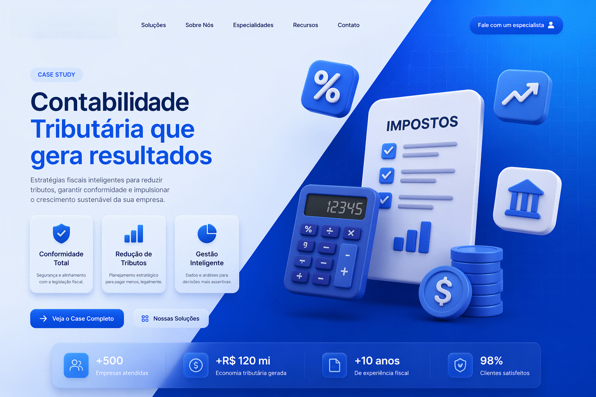
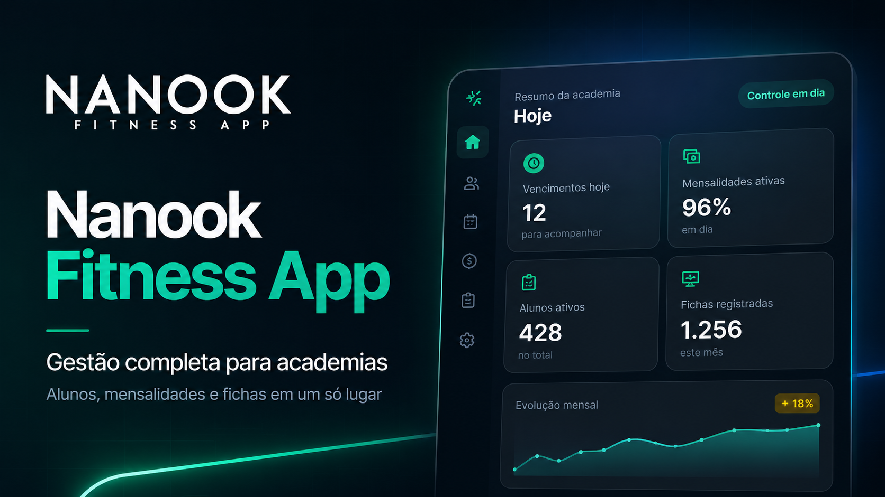
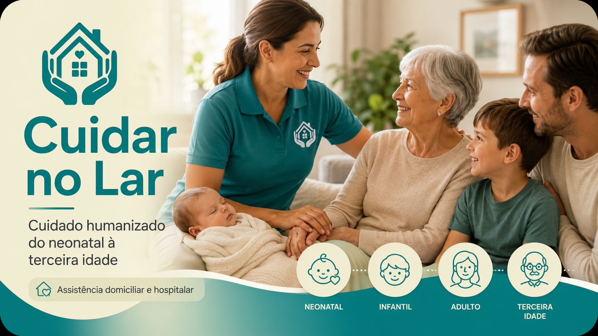
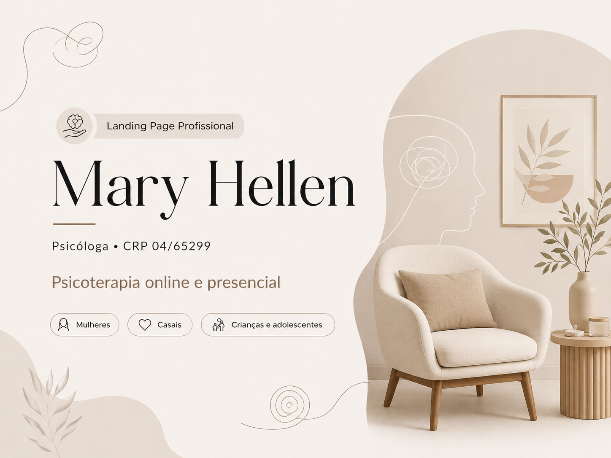

Sites, páginas de venda e atendimento automático
5
Projetos publicados
5
Nichos atendidos
100%
Bom no celular
Botão
WhatsApp e novos contatos
Páginas profissionais para transformar visitantes em clientes
Criamos sites e páginas de venda com texto estratégico, visual bonito no celular e botão direto para WhatsApp. Bonito é bom. Bonito que gera conversa é melhor.
Diagnóstico inicial sem compromisso. Você vê uma direção clara antes de fechar qualquer projeto.
O problema
Seu negócio não precisa de mais uma página enfeitada
Precisa de uma presença digital que explique, transmita confiança e leve o visitante para a próxima ação sem dar voltas.
Promessa confusa
Quando o visitante não entende rápido o que você faz, ele sai. Simples assim. Internet não perdoa discurso enrolado.
Visual sem estratégia
Design bonito ajuda, mas sozinho não vende. A página precisa ter ordem, argumentos claros, prova e um caminho fácil para o contato.
Atendimento perdido
Contato interessado sem direção vira conversa perdida. Por isso conectamos página, WhatsApp, formulário e atendimento automático quando faz sentido.
Portfólio real
Projetos desenvolvidos para nichos diferentes
Perícia, contabilidade, fitness, cuidados e automação digital. Nichos diferentes, uma regra igual: clareza, confiança e caminho direto para contato.

Captação consultiva Ver projeto
Página de venda
Contabilidade Tributária
Página comercial para contador tributarista, com autoridade, oferta clara e botão direto para falar com especialista.
 Credibilidade visual
Ver projeto
Credibilidade visual
Ver projeto
Site de Serviço
Perícia Judicial
Presença digital para especialista, destacando formação, atuação, diferenciais e caminhos de contato com mais confiança.

Visual escuro premium Ver projeto
Saúde e Fitness
Nanook Fitness
Página moderna para aplicativo fitness, com visual forte, leitura rápida e foco em ação pelo celular.
Atendimento comercial automático
Ver projeto
Site + atendimento automático
RS Automação Digital
Vitrine comercial da agência, conectando criação de sites, páginas de venda, atendimento automático, inteligência artificial e organização comercial.

Cuidados Sociais Humanizado Ver projeto
Saúde + Cuidados
Cuidar no Lar
Página de apresentação para agência de cuidados sociais, com foco em humanização, clareza de serviço e contato fácil.

Conexão emocional Ver projeto
Página de Psicologia
Psicologia Online
Página para psicólogo com linguagem acolhedora, agenda clara e destaque para atendimento online.
Novo case em construção
Ver projeto
Novo projeto
Seu projeto merece destaque
Transformamos ideias em soluções digitais modernas, rápidas e voltadas para resultados reais.
Nenhum projeto encontrado nessa categoria.
O que fazemos
Site profissional com estratégia, visual bonito e caminho claro para venda
Atendemos diferentes nichos, mas a página nunca nasce genérica. Cada projeto recebe linguagem, estrutura e botão de contato alinhados ao serviço.
Páginas de venda
Páginas de venda com mensagem clara, benefícios, prova do trabalho e caminho pensado para gerar contato.
Sites de apresentação
Site profissional para apresentar serviços, história, diferenciais, contatos e autoridade com aparência de empresa séria.
Atendimento automático
Organização do atendimento com WhatsApp, formulários, planilhas e inteligência artificial para reduzir retrabalho e cuidar melhor dos contatos recebidos.
Loja virtual
Loja virtual com catálogo, carrinho e visual claro para facilitar a compra sem deixar o cliente caçando botão.
Experiência simples para o cliente
Telas limpas, coerentes e fáceis de navegar. Cliente perdido não compra; no máximo fecha a aba com rancor.
Site rápido e preparado para Google
Código leve, boa organização interna e cuidados básicos para o site carregar bem e não nascer cansado.
Prova de entrega
Projeto publicado é melhor que promessa bonita.
Aqui a prova não é frase pronta nem número inventado. É página no ar, nichos diferentes atendidos e estrutura pensada para transformar visita em contato.
O que dá confiança?
Entrega visível, navegável e pronta para divulgar.
Antes de falar em resultado, a base precisa existir: página funcionando, texto claro, visual profissional e botão de contato bem posicionado. O básico bem feito ainda vence muita firula.
5+
nichos publicados
100%
pensado para celular
1
caminho claro para contato
Páginas reais, clicáveis e no ar
Nada de imagem bonita parada. O visitante consegue navegar, entender a oferta e chamar pelo canal certo.
Visual adaptado ao nicho
Jurídico pede confiança. Fitness pede energia. Saúde pede cuidado. Cada projeto fala com o público certo.
Texto claro para cliente leigo
Sem sopa de siglas. A pessoa entende o serviço, os próximos passos e por que vale entrar em contato.
Pronto para redes, WhatsApp e anúncios
A página já nasce com estrutura para divulgação, captação de interessados e melhorias futuras com dados reais.
Processo
Como tiramos a ideia do papel
Sem mil reuniões para decidir a cor do botão. Primeiro entendemos o negócio, depois montamos a narrativa, o visual e a publicação.
Diagnóstico comercial
Entendemos serviço, público, objeções, diferenciais e objetivo da página.
Estrutura da página
Organizamos frase principal, seções, provas, benefícios, botão de contato e caminho para conversa.
Design e desenvolvimento
Criamos o visual, desenvolvemos a página e ajustamos tudo para funcionar bem no celular.
Publicação e orientação
Publicamos o projeto e entregamos pronto para divulgar em anúncios, redes sociais ou WhatsApp.
O que você recebe
Uma página pronta para divulgar, medir e melhorar
O objetivo não é só “ter um site”. É ter uma estrutura comercial que ajude sua empresa a ser entendida e chamada.
Dúvidas comuns
Perguntas que evitam surpresa depois
Projeto bom começa alinhado. Nada de fechar no escuro e descobrir depois que faltava metade.
Serve para qualquer nicho?
Sim, desde que exista uma oferta clara. O visual muda conforme o nicho, mas a lógica é a mesma: explicar, gerar confiança e levar para o contato.
A página já vem pronta para WhatsApp?
Sim. O botão de contato pode abrir uma conversa com mensagem pronta, facilitando o primeiro contato e reduzindo atrito para o cliente.
Vocês também fazem automação?
Sim. Quando o negócio precisa, conectamos formulários, WhatsApp, planilhas e etapas automáticas para organizar o atendimento.
Tenho que saber exatamente o que escrever?
Não. A ideia é justamente transformar seu serviço em uma página clara, com linguagem comercial e estrutura organizada.
Projeto novo no radar?
Sua empresa precisa de uma página que venda, não só enfeite
Conte o que você vende, para quem vende e qual ação espera do visitante. A gente transforma isso em uma presença digital bonita, clara e pronta para gerar conversa.
Sem empurrar pacote pronto. Primeiro entendemos o projeto, depois indicamos o melhor caminho.